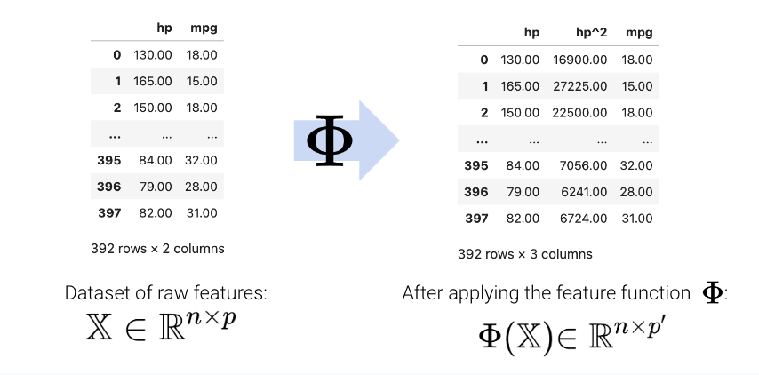
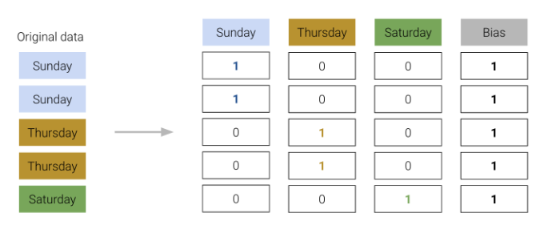

Apply the sklearn library for model creation and training
Recognize the value of feature engineering as a tool to improve model performance
Implement polynomial feature generation and one hot encoding
Understand the interactions between model complexity, model variance, and training error
At this point, we’ve grown quite familiar with the modeling process. We’ve introduced the concept of loss, used it to fit several types of models, and, most recently, extended our analysis to multiple regression. Along the way, we’ve forged our way through the mathematics of deriving the optimal model parameters in all its gory detail. It’s time to make our lives a little easier – let’s implement the modeling process in code!
In this lecture, we’ll explore two techniques for model fitting:
Translating our derived formulas for regression to python
Using python’s sklearn package
With our new programming frameworks in hand, we will also add sophistication to our models by introducing more complex features to enhance model performance.
Implementing Derived Formulas in Code
Throughout this lecture, we’ll refer to the penguins dataset.
import pandas as pdimport seaborn as snsimport numpy as nppenguins = sns.load_dataset("penguins")penguins = penguins[penguins["species"] =="Adelie"].dropna()penguins.head()
species
island
bill_length_mm
bill_depth_mm
flipper_length_mm
body_mass_g
sex
0
Adelie
Torgersen
39.1
18.7
181.0
3750.0
Male
1
Adelie
Torgersen
39.5
17.4
186.0
3800.0
Female
2
Adelie
Torgersen
40.3
18.0
195.0
3250.0
Female
4
Adelie
Torgersen
36.7
19.3
193.0
3450.0
Female
5
Adelie
Torgersen
39.3
20.6
190.0
3650.0
Male
Our goal will be to predict the value of the "bill_depth_mm" for a particular penguin given its "flipper_length_mm" and "body_mass_g". We’ll also add a bias column of all ones to represent the intercept term of our models.
# Add a bias column of all ones to `penguins`penguins["bias"] = np.ones(len(penguins), dtype=int) # Define the design matrix, X...X = penguins[["bias", "flipper_length_mm", "body_mass_g"]].to_numpy()# ...as well as the target variable, yY = penguins[["bill_depth_mm"]].to_numpy()# Converting X and Y to NumPy arrays avoids misinterpretation of column labels
In the lecture on ordinary least squares, we expressed multiple linear regression using matrix notation.
\[\hat{\mathbb{Y}} = \mathbb{X}\theta\]
We used a geometric approach to derive the following expression for the optimal model parameters:
To make predictions using our optimized parameter values, we matrix-multiply the design matrix with the parameter vector:
\[\hat{\mathbb{Y}} = \mathbb{X}\theta\]
y_hat = X @ theta_hatpd.DataFrame(y_hat).head()
0
0
18.322561
1
18.445578
2
17.721412
3
17.997254
4
18.263268
sklearn
We’ve already saved a lot of time (and avoided tedious calculations) by translating our derived formulas into code. However, we still had to go through the process of writing out the linear algebra ourselves.
To make life even easier, we can turn to the sklearnpython library. sklearn is a robust library of machine learning tools used extensively in research and industry. It gives us a wide variety of in-built modeling frameworks and methods, so we’ll keep returning to sklearn techniques as we progress through Data 100.
Regardless of the specific type of model being implemented, sklearn follows a standard set of steps for creating a model.
Create a model object. This generates a new instance of the model class. You can think of it as making a new “copy” of a standard “template” for a model. In code, this looks like:
my_model = ModelClass()
Fit the model to the X design matrix and Y target vector. This calculates the optimal model parameters “behind the scenes” without us explicitly working through the calculations ourselves. The fitted parameters are then stored within the model for use in future predictions:
my_model.fit(X, Y)
Use the fitted model to make predictions on the X input data using .predict.
my_model.predict(X)
To extract the fitted parameters, we can use:
my_model.coef_
my_model.intercept_
Let’s put this into action with our multiple regression task.
1. Initialize an instance of the model class
sklearn stores “templates” of useful models for machine learning. We begin the modeling process by making a “copy” of one of these templates for our own use. Model initialization looks like ModelClass(), where ModelClass is the type of model we wish to create.
For now, let’s create a linear regression model using LinearRegression().
my_model is now an instance of the LinearRegression class. You can think of it as the “idea” of a linear regression model. We haven’t trained it yet, so it doesn’t know any model parameters and cannot be used to make predictions. In fact, we haven’t even told it what data to use for modeling! It simply waits for further instructions.
import sklearn.linear_model as lmmy_model = lm.LinearRegression()
2. Train the model using .fit
Before the model can make predictions, we will need to fit it to our training data. When we fit the model, sklearn will run gradient descent behind the scenes to determine the optimal model parameters. It will then save these model parameters to our model instance for future use.
All sklearn model classes include a .fit method, which is used to fit the model. It takes in two inputs: the design matrix, X, and the target variable, y.
Let’s start by fitting a model with just one feature: the flipper length. We create a design matrix X by pulling out the "flipper_length_mm" column from the DataFrame.
# .fit expects a 2D data design matrix, so we use double brackets to extract a DataFrameX = penguins[["flipper_length_mm"]]y = penguins["bill_depth_mm"]my_model.fit(X, y)
LinearRegression()
In a Jupyter environment, please rerun this cell to show the HTML representation or trust the notebook. On GitHub, the HTML representation is unable to render, please try loading this page with nbviewer.org.
LinearRegression()
Notice that we use double brackets to extract this column. Why double brackets instead of just single brackets? The .fit method, by default, expects to receive 2-dimensional data – some kind of data that includes both rows and columns. Writing penguins["flipper_length_mm"] would return a 1D Series, causing sklearn to error. We avoid this by writing penguins[["flipper_length_mm"]] to produce a 2D DataFrame.
And in just three lines of code, our model has run gradient descent to determine the optimal model parameters! Our single-feature model takes the form:
Note that LinearRegression will automatically include an intercept term.
The fitted model parameters are stored as attributes of the model instance. my_model.intercept_ will return the value of \(\hat{\theta}_0\) as a scalar. my_model.coef_ will return all values \(\hat{\theta}_1, \hat{\theta}_1, ...\) in an array. Because our model only contains one feature, we see just the value of \(\hat{\theta}_1\) in the cell below.
# The intercept term, theta_0my_model.intercept_
7.297305899612306
# All parameters theta_1, ..., theta_pmy_model.coef_
array([0.05812622])
3. Use the fitted model to make predictions
Now that the model has been trained, we can use it to make predictions! To do so, we use the .predict method. .predict takes in one argument: the design matrix that should be used to generate predictions. To understand how the model performs on the training set, we would pass in the training data. Alternatively, to make predictions on unseen data, we would pass in a new dataset that wasn’t used to train the model.
Below, we call .predict to generate model predictions on the original training data. As before, we use double brackets to ensure that we extract 2-dimensional data.
y_hat_one_feature = my_model.predict(penguins[["flipper_length_mm"]])print(f"The RMSE of the model is {np.sqrt(np.mean((y-y_hat_one_feature)**2))}")
We repeat this three-step process by intializing a new model object, then calling .fit and .predict as before.
# Step 1: initialize LinearRegression modeltwo_feature_model = lm.LinearRegression()# Step 2: fit the modelX_two_features = penguins[["flipper_length_mm", "body_mass_g"]]y = penguins["bill_depth_mm"]two_feature_model.fit(X_two_features, y)# Step 3: make predictionsy_hat_two_features = two_feature_model.predict(X_two_features)print(f"The RMSE of the model is {np.sqrt(np.mean((y-y_hat_two_features)**2))}")
The RMSE of the model is 0.9881331104079044
We can also see that we obtain the same predictions using sklearn as we did when applying the ordinary least squares formula before!
Code
pd.DataFrame({"Y_hat from OLS":np.squeeze(y_hat), "Y_hat from sklearn":y_hat_two_features}).head()
Y_hat from OLS
Y_hat from sklearn
0
18.322561
18.322561
1
18.445578
18.445578
2
17.721412
17.721412
3
17.997254
17.997254
4
18.263268
18.263268
Feature Engineering
At this point in the course, we’ve equipped ourselves with some powerful techniques to build and optimize models. We’ve explored how to develop models of multiple variables, as well as how to transform variables to help linearize a dataset and fit these models to maximize their performance.
All of this was done with one major caveat: the regression models we’ve worked with so far are all linear in the input variables. We’ve assumed that our predictions should be some combination of linear variables. While this works well in some cases, the real world isn’t always so straightforward. We’ll learn an important method to address this issue – feature engineering – and consider some new problems that can arise when we do so.
Feature engineering is the process of transforming raw features into more informative features that can be used in modeling or EDA tasks and improve model performance.
Feature engineering allows you to:
Capture domain knowledge
Express non-linear relationships using linear models
Use non-numeric features in models
Feature Functions
A feature function describes the transformations we apply to raw features in a dataset to create a design matrix of transformed features. We typically denote the feature function as \(\Phi\) (think to yourself: “phi”-ture function). When we apply the feature function to our original dataset \(\mathbb{X}\), the result, \(\Phi(\mathbb{X})\), is a transformed design matrix ready to be used in modeling.
For example, we might design a feature function that computes the square of an existing feature and adds it to the design matrix. In this case, our existing matrix \([x]\) is transformed to \([x, x^2]\). Its dimension increases from 1 to 2. Often, the dimension of the featurized dataset increases as seen here.

The new features introduced by the feature function can then be used in modeling. Often, we use the symbol \(\phi_i\) to represent transformed features after feature engineering.
In matrix notation, the symbol \(\Phi\) is sometimes used to denote the design matrix after feature engineering has been performed. Note that in the usage below, \(\Phi\) is now a feature-engineered matrix, rather than a function.
\[\hat{\mathbb{Y}} = \Phi \theta\]
More formally, we describe a feature function as transforming the original \(\mathbb{R}^{n \times p}\) dataset \(\mathbb{X}\) to a featurized \(\mathbb{R}^{n \times p'}\) dataset \(\mathbb{\Phi}\), where \(p'\) is typically greater than \(p\).
Feature engineering opens up a whole new set of possibilities for designing better-performing models. As you will see in lab and homework, feature engineering is one of the most important parts of the entire modeling process.
A particularly powerful use of feature engineering is to allow us to perform regression on non-numeric features. One hot encoding is a feature engineering technique that generates numeric features from categorical data, allowing us to use our usual methods to fit a regression model on the data.
To illustrate how this works, we’ll refer back to the tips dataset from previous lectures. Consider the "day" column of the dataset:
Code
import numpy as nptips = sns.load_dataset("tips")tips.head()
total_bill
tip
sex
smoker
day
time
size
0
16.99
1.01
Female
No
Sun
Dinner
2
1
10.34
1.66
Male
No
Sun
Dinner
3
2
21.01
3.50
Male
No
Sun
Dinner
3
3
23.68
3.31
Male
No
Sun
Dinner
2
4
24.59
3.61
Female
No
Sun
Dinner
4
At first glance, it doesn’t seem possible to fit a regression model to this data – we can’t directly perform any mathematical operations on the entry “Sun”.
To resolve this, we instead create a new table with a feature for each unique value in the original "day" column. We then iterate through the "day" column. For each entry in "day" we fill the corresponding feature in the new table with 1. All other features are set to 0.
The OneHotEncoder class of sklearn (documentation) offers a quick way to perform this one-hot encoding. You will explore its use in detail in the lab. For now, recognize that we follow a very similar workflow to when we were working with the LinearRegression class: we initialize a OneHotEncoder object, fit it to our data, then use .transform to apply the fitted encoder.
from sklearn.preprocessing import OneHotEncoder# Initialize a OneHotEncoder objectohe = OneHotEncoder()# Fit the encoderohe.fit(tips[["day"]])# Use the encoder to transform the raw "day" featureencoded_day = ohe.transform(tips[["day"]]).toarray()encoded_day_df = pd.DataFrame(encoded_day, columns=ohe.get_feature_names_out())encoded_day_df.head()
day_Fri
day_Sat
day_Sun
day_Thur
0
0.0
0.0
1.0
0.0
1
0.0
0.0
1.0
0.0
2
0.0
0.0
1.0
0.0
3
0.0
0.0
1.0
0.0
4
0.0
0.0
1.0
0.0
The one-hot encoded features can then be used in the design matrix to train a model:
Now, the day feature (or rather, the four new boolean features that represent day) can be used to fit a model.
Using sklearn to fit the new model, we can determine the model coefficients, allowing us to understand how each feature impacts the predicted tip.
from sklearn.linear_model import LinearRegressiondata_w_ohe = tips[["total_bill", "size", "day"]].join(encoded_day_df).drop(columns ="day")ohe_model = lm.LinearRegression(fit_intercept=False) #Tell sklearn to not add an additional bias column. Why?ohe_model.fit(data_w_ohe, tips["tip"])pd.DataFrame({"Feature":data_w_ohe.columns, "Model Coefficient":ohe_model.coef_})
Feature
Model Coefficient
0
total_bill
0.092994
1
size
0.187132
2
day_Fri
0.745787
3
day_Sat
0.621129
4
day_Sun
0.732289
5
day_Thur
0.668294
For example, when looking at the coefficient for day_Fri, we can understand how much the fact that it is Friday impacts the predicted tip.
When one-hot encoding, keep in mind that any set of one-hot encoded columns will always sum to a column of all ones, representing the bias column. More formally, the bias column is a linear combination of the OHE columns.

We must be careful not to include this bias column in our design matrix. Otherwise, there will be linear dependence in the model, meaning \(\mathbb{X}^T\mathbb{X}\) would no longer be invertible, and our OLS estimate \(\hat{\theta} = (\mathbb{X}^T\mathbb{X})^{-1}\mathbb{X}^T\mathbb{Y}\) fails.
To resolve this issue, we simply omit one of the one-hot encoded columns or do not include an intercept term.
Either approach works — we still retain the same information as the omitted column being a linear combination of the remaining columns.
Polynomial Features
We have encountered a few cases now where models with linear features have performed poorly on datasets that show clear non-linear curvature.
As an example, consider the vehicles dataset, which contains information about cars. Suppose we want to use the hp (horsepower) of a car to predict its "mpg" (gas mileage in miles per gallon). If we visualize the relationship between these two variables, we see a non-linear curvature. Fitting a linear model to these variables results in a high (poor) value of RMSE.
\[\hat{y} = \theta_0 + \theta_1 (\text{hp})\]
Code
pd.options.mode.chained_assignment =Nonevehicles = sns.load_dataset("mpg").dropna().rename(columns = {"horsepower": "hp"}).sort_values("hp")X = vehicles[["hp"]]y = vehicles["mpg"]hp_model = lm.LinearRegression()hp_model.fit(X, y)hp_model_predictions = hp_model.predict(X)import matplotlib.pyplot as pltsns.scatterplot(data=vehicles, x="hp", y="mpg")plt.plot(vehicles["hp"], hp_model_predictions, c="tab:red");print(f"MSE of model with (hp) feature: {np.mean((y-hp_model_predictions)**2)}")
MSE of model with (hp) feature: 23.943662938603108
To capture non-linearity in a dataset, it makes sense to incorporate non-linear features. Let’s introduce a polynomial term, \(\text{hp}^2\), into our regression model. The model now takes the form:
How can we fit a model with non-linear features? We can use the exact same techniques as before: ordinary least squares, gradient descent, or sklearn. This is because our new model is still a linear model. Although it contains non-linear features, it is linear with respect to the model parameters. All of our previous work on fitting models was done under the assumption that we were working with linear models. Because our new model is still linear, we can apply our existing methods to determine the optimal parameters.
# Add a hp^2 feature to the design matrixX = vehicles[["hp"]]X["hp^2"] = vehicles["hp"]**2# Use sklearn to fit the modelhp2_model = lm.LinearRegression()hp2_model.fit(X, y)hp2_model_predictions = hp2_model.predict(X)sns.scatterplot(data=vehicles, x="hp", y="mpg")plt.plot(vehicles["hp"], hp2_model_predictions, c="tab:red");print(f"MSE of model with (hp^2) feature: {np.mean((y-hp2_model_predictions)**2)}")
MSE of model with (hp^2) feature: 18.984768907617223
Looking a lot better! By incorporating a squared feature, we are able to capture the curvature of the dataset. Our model is now a parabola centered on our data. Notice that our new model’s error has decreased relative to the original model with linear features. .
Complexity and Overfitting
We’ve seen now that feature engineering allows us to build all sorts of features to improve the performance of the model. In particular, we saw that designing a more complex feature (squaring hp in the vehicles data previously) substantially improved the model’s ability to capture non-linear relationships. To take full advantage of this, we might be inclined to design increasingly complex features. Consider the following three models, each of different order (the maximum exponent power of each model):
Model with order 2: \(\hat{\text{mpg}} = \theta_0 + \theta_1 (\text{hp}) + \theta_2 (\text{hp}^2)\)
Model with order 3: \(\hat{\text{mpg}} = \theta_0 + \theta_1 (\text{hp}) + \theta_2 (\text{hp}^2) + \theta_3 (\text{hp}^3)\)
Model with order 4: \(\hat{\text{mpg}} = \theta_0 + \theta_1 (\text{hp}) + \theta_2 (\text{hp}^2) + \theta_3 (\text{hp}^3) + \theta_4 (\text{hp}^4)\)
As we can see in the plots above, MSE continues to decrease with each additional polynomial term. To visualize it further, let’s plot models as the complexity increases from 0 to 6:
When we use our model to make predictions on the same data that was used to fit the model, we find that the MSE decreases with each additional polynomial term (as our model gets more complex). The training error is the model’s error when generating predictions from the same data that was used for training purposes. We can conclude that the training error goes down as the complexity of the model increases.
This seems like good news – when working on the training data, we can improve model performance by designing increasingly complex models.
Math Fact: given \(N\) overlapping data points, we can always find a polynomial of degree \(N-1\) that goes through all those points.
For example: there always exists a degree-4 polynomial curve that can perfectly model a dataset of 5 datapoints
However, high model complexity comes with its own set of issues. When building the vehicles models above, we trained the models on the entire dataset and then evaluated their performance on this same dataset. In reality, we are likely to instead train the model on a sample from the population, then use it to make predictions on data it didn’t encounter during training.
Let’s walk through a more realistic example. Say we are given a training dataset of just 6 datapoints and want to train a model to then make predictions on a different set of points. We may be tempted to make a highly complex model (e.g., degree 5), especially given it makes perfect predictions on the training data as clear on the left. However, as shown in the graph on the right, this model would perform horribly on the rest of the population!
The phenomenon above is called overfitting. The model effectively just memorized the training data it encountered when it was fitted, leaving it unable to generalize well to data it didn’t encounter during training.
Additionally, since complex models are sensitive to the specific dataset used to train them, they have high variance. A model with high variance tends to vary more dramatically when trained on different datasets. Going back to our example above, we can see our degree-5 model varies erratically when we fit it to different samples of 6 points from vehicles.
We now face a dilemma: we know that we can decrease training error by increasing model complexity, but models that are too complex start to overfit and can’t be reapplied to new datasets due to high variance.
We can see that there is a clear trade-off that comes from the complexity of our model. As model complexity increases, the model’s error on the training data decreases. At the same time, the model’s variance tends to increase.
The takeaway here: we need to strike a balance in the complexity of our models; we want models that are generalizable to “unseen” data. A model that is too simple won’t be able to capture the key relationships between our variables of interest; a model that is too complex runs the risk of overfitting.
This begs the question: how do we control the complexity of a model? Stay tuned for our Lecture 16 on Cross-Validation and Regularization!